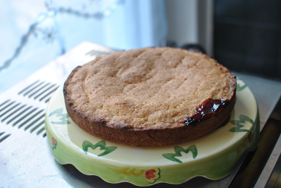

Gateau Basque

- Zubereitung: ca. 20 Minuten
- Kühlen: ca. 60 Minuten
- Backen: ca. 35 Minuten
- Für 1 Springform mit 20 cm Durchmesser
Zutaten
- 225 g Mehl
- 125 g Zucker
- 1 Msp. Salz
- 1 TL abgeriebene Bio-Zitronenschale
- 1 Ei
- 125 g kalte Butter
- Mehl zum Verarbeiten
- Fett für die Form
- 150 g Kirschkonfitüre
- 1 Eigelb zum Bestreichen
Zubereitung
- Für den Mürbeteig das Mehl auf die Arbeitsfläche sieben. In die Mitte eine Mulde
drücken, Zucker, Salz und Zitronenschale daraufstreuen und das Ei hinein geben. Butter
in Flöckchen auf dem Rand verteilen. Alle Zutaten vom Rand aus Rasch zu einem geschmeidigen
Teig verkneten. Teig in Folie gewickelt 1 Stunde kalt stellen.
- Den Backofen auf 200° Celsius vorheizen. Die Form einfetten. Den Teig auf der bemehlten
Arbeitsfläche kurz durchkneten, dann zwei Drittel davon etwas größer als die Form rund ausrollen.
Den Teig in die Form legen, dabei einen niedrigen Rand bilden. Die Konfitüre darauf verstreichen.
- Restlichen Teig in Größe der Form ausrollen und auf die Konfitüre legen. Die Teigränder
zusammenkneifen. Die Teigoberfläche mit einer Gabel mehrfach einstechen und mit Eigelb bestreichen.
Im Ofen (unten, Umluft 180° Celsius) 30 bis 35 Minuten backen. Auf einem Kuchengitter auskühlen lassen.